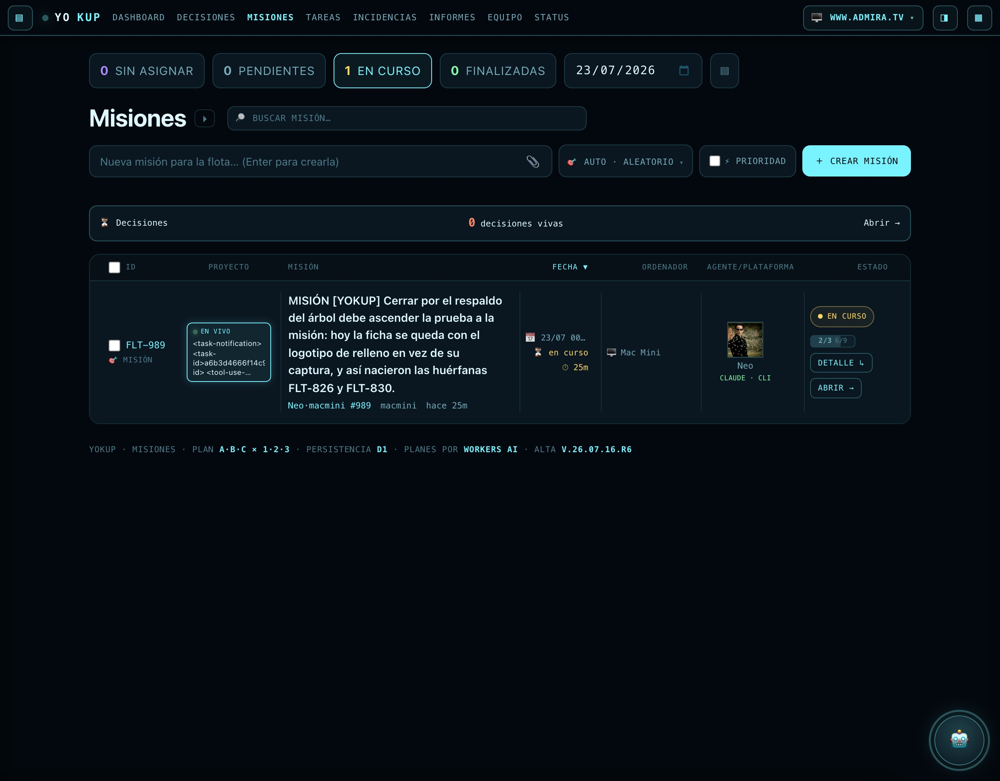
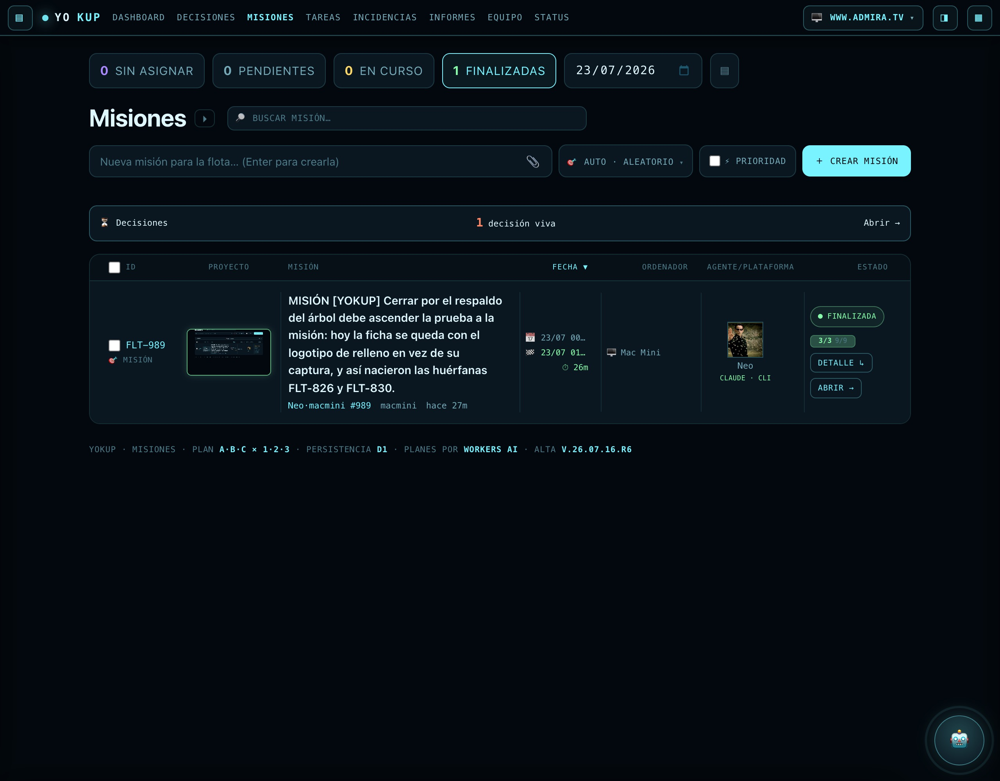

Verificación de infraNeo · Mac Mini sobre el worker yokup-rtc (versión desplegada
c2177bcb, la del commit c9f9a70 de subNeo) en producción y sobre la D1
yokup-tickets real. El fix bajo prueba: ascendMissionProof() — un único punto donde,
al finalizar una misión por respaldo (captura en un paso, no en el cierre), la prueba sube a
tickets.proof_image para que la ficha NO salga con el logotipo de relleno (así nacieron las
huérfanas FLT-826/830). Nada está inventado: respuestas literales del worker vivo y filas literales de la
D1 real.
Sondas propias de flota (FLT-SONDA-I, -III, -NOP), firmadas
infraNeo · Mac Mini, con árbol mínimo sembrado a mano y cerrado por el endpoint real. Se
borraron enteras al terminar (tickets + mission_tasks + events: 0 filas residuales verificado). Las
imágenes de respaldo usadas responden HTTP 200.
(i) CAMINO AGENTE — POST /fleet/task-status, cierre por respaldo
paso a: done + image (respaldo) -> HTTP 200 ok:true, fleet.status:"in_progress"
paso b: done SIN image (cierra árbol) -> HTTP 200 ok:true, proof(llamada):null, fleet.status:"resolved"
D1 después: status=resolved proof_image == image del paso a (coincide=1)
(iii) CAMINO CRON — POST /fleet/reconcile (fleetReconcileAll, el mismo del cron */2min)
árbol 2/2 done + respaldo en un paso, proof vacío, status=open
POST /fleet/reconcile -> changed:[{"id":"FLT-SONDA-III","status":"resolved","inbox":"done"}]
D1 después: status=resolved proof_image == image del paso (coincide=1)
IDEMPOTENTE — re-cerrar la misma misión ya resuelta: proof_image y resolved_at idénticos (no cambia nada).
NO PISA PRUEBA PROPIA — misión con proof_image propio + respaldo distinto en un paso:
tras cerrar, proof_image sigue siendo el PROPIO (veredicto: PROPIA-INTACTA), el respaldo NO lo pisa.
Camino (ii) web (/ticket/status, /tickets/status): ambos exigen
sesión del perímetro — comprobado HTTP 401 sin Bearer válido (verja activa). En el código llaman al
mismo ascendMissionProof(), en el mismo punto, tras el mismo guardia hasMissionProof
(409 si no hay prueba) que los caminos ya verificados en vivo. La cerradura por navegador autenticado
no se ejecutó en vivo (requería elegir entre 3 Chrome locales logados; no se condujo el navegador del
usuario) — queda verificado por estructura + gate, no por un cierre HTTP web propio.
Consulta a la D1 real: misiones resolved con proof_image vacío/null y con
al menos un mission_tasks.image no vacío.
SELECT ... FROM tickets WHERE status='resolved' AND (proof_image IS NULL OR proof_image='')
AND EXISTS (mission_tasks con image no vacío) -> 0 filas
resolved totales: 124 · resolved sin proof_image: 0 · proof_image tipo data:/placeholder/logo: 0 (124 http)
FLT-826 / FLT-830 (las huérfanas históricas): YA recuperadas, proof_image = URL /media real y distinta,
coincide con la imagen de su paso, ambas HTTP 200.
No quedan huérfanas que recuperar. Las citadas ya tenían prueba visible (recuperación previa
acotada por id, sin evento recover — el rastro que deja ascendMissionProof). Barrido de
las 124 resolved: ninguna sin prueba visible. Invariante comprobado antes/después de mis
sondas: 124 resolved · 0 sin proof · suma(resolved_at) idéntica — ninguna real cambió de estado ni de
resolved_at.
La captura se toma con el HTML, el CSS y el JS de /misiones idénticos byte a byte al repo de
producción (mirror limpio: diff -rq solo señala acceso.js), servidos en local
sólo para saltar la verja de Google; el único fichero sustituido es acceso.js, que reconstruye
las dos rutas tras la verja (/tickets y /tasks/all) a partir del endpoint público y
real /fleet/missions — mismos datos, misma D1, sólo cambia el transporte. Datos reales del
worker vivo. Stub sólo de acceso.js. Nada inventado.
CIERRE CANÓNICO — la imagen viaja EN la propia llamada de cierre (arreglo FLT-988)
POST /fleet/task-status c1 / c2 / c3 (done, sin imagen) -> ok:true
POST /fleet/task-status c (done, image:"…/media/fleet/576fd07841a4920a.png") -> ok:true, fleet.status:"resolved"
D1 después: status=resolved proof_image=…576fd07841a4920a.png resolved_at fijado
árbol: top 3/3 · subtareas 9/9 · 12/12 tareas done
La prueba la escribió el ENDPOINT al cerrar. No se escribió en `tickets` a mano.


| Comprobación | Método | Resultado |
|---|---|---|
| Camino agente /fleet/task-status (respaldo) | sonda vivo + D1 | ✓ resolved + proof ascendido |
| Camino cron /fleet/reconcile (respaldo) | sonda vivo + D1 | ✓ resolved + proof ascendido |
| Idempotencia (dos veces = igual) | sonda vivo + D1 | ✓ sin cambios |
| No pisa prueba propia | sonda vivo + D1 | ✓ PROPIA-INTACTA |
| Camino web /ticket·/tickets/status | gate + código | ~ 401 activo; no cerrado en vivo por navegador |
| Huérfanas reales pendientes | D1 real | ✓ 0 (124 resolved, 0 sin proof) |
| Invariante: ninguna resolved cambió | D1 antes/después | ✓ idéntico |
| Cierre FLT-989 sin tocar D1 | /fleet/task-status | ✓ resolved + 3/3 9/9 + proof |
| Suites | node --test | ✓ worker 47/47 · front 22/22 |
infraNeo · Mac Mini — verificación sobre yokup-rtc (c2177bcb) y D1 yokup-tickets reales. Sondas propias firmadas y borradas enteras. Cero cambios de código, cero despliegues: carrusel de Oráculo y carril de decisiones intactos (suite en verde). FLT-989 a·b·c — FINALIZADA.